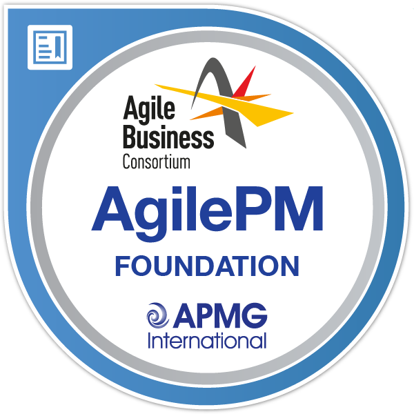

Oscar Reedman

Contact Details
Qualification Profile
Motivated and results-driven professional with a strong passion and experience in WMS project implementation. Background in project management,
coupled with a solid understanding of warehouse processes and technologies. Possess strong analytical skills and a keen eye for detail,
which enable to effectively identify process inefficiencies and propose innovative solutions. Adept at collaborating with cross-functional
teams and ensuring clear communication and alignment of project goals. Strong communication skills, able to build relationships and manage
competing demands that result in the achievement of challenging goals. Analytical planner adept at identifying and isolating project challenges,
as well as devising solutions to mitigate issues.
CORE PROFICIENCIES
Project Coordination | WMS Implementation | Technical Planning | Operational Excellence | Resource Allocation | Decision Making
Process Improvement | Time Management | Team Collaboration | Problem Resolution | Attention to Detail | Analytical Thinking
PROFESSIONAL EXPERIENCE
JD Sports, Derby
June 2023 to Present
Manhattan WMS Superuser
- Coordinated the testing and process development for 'Phase 2,' strategically integrating the Ferag sorting system 'SkyFall' with the existing SynQ and Manhattan systems for operational efficiency.
- Orchestrated configuration modifications by meticulously gathering metadata, executing comprehensive tests, and imple-menting efficient process enhancements.
- Maintained transparent and effective communication with senior management by playing a pivotal role in the evolution of operational processes during this critical phase.
- Identified and resolved system issues by documenting challenges, replicating problems, and formulating interim solutions.
- Used tools, such as 'Postman' for API interactions, adeptly parsed log files, and proficiently managed message reprocessing.
- Conducted evaluations of error messages, validated JSON files, and logged bugs using Jira for improved system reliability.
TBA Group,
May 2023 to June 2023
Primary Service Desk Analyst (2nd Line)
- Offered expert second-line support to end-users and customers for Warehouse Management Systems (WMS) and Terminal Operating Systems (TOS) for efficient problem resolution and customer satisfaction.
- Documented all relevant information and maintained consistent communication with customers for keeping them informed about the progress of issue resolution.
- Used advanced technical skills in Linux and SQL servers, along with proficiency in IT Service Management (ITSM) tools, such as Cherwell to effectively manage and resolve system issues.
- Worked closely with technical teams to develop and implement effective fixes to the system, while enhancing overall system performance and reliability.
- Contributed to the continuous improvement of support processes through proactive identification and resolution of system issues for high levels of customer satisfaction and system stability.
- Presented issues to wider technical teams by detailing actions already taken to facilitate efficient problem resolution.
JD Sports, Derby
Sep 2022 to May 2023
Inventory Control Supervisor
- Achieved expert proficiency in navigating the Manhattan Warehouse Management System (WMS), evolving from mastering basic functionalities to handling complex operational challenges.
- Addressed and rectified a variety of inbound procedure issues, including incorrect barcodes, lost cartons, and inaccuracies in system data for the maintenance of precise inbound operations.
- Identified and addressed connectivity issues between Manhattan and SYNQ, particularly during the inbound process, which impacted Autostore carton placement efficiency.
- Implemented a strategic approach to resolve these issues by engaging Manhattan to verify carton receipt, sorting, and trammel processes before retransmitting information to SYNQ.
- Consistently executed process and escalated persistent issues to relevant departments, while proactively advocating for sus-tainable solutions to improve overall system performance.
- Identified and resolved critical issues related to missing orders and cartons for efficiency and accuracy of the inbound pro-cess.
GXO ASOS, Lichfield
Aug 2021 to Sep 2022
First Line Manager
- Utilised Matflo Warehouse Management System (WMS) to thoroughly investigate the issue for delving into system log files to pinpoint the root cause of the automation error.
- Ensured that the warehouse systems operated correctly and within defined process parameters for preventing users from executing actions outside of these boundaries.
- Played a key role in enhancing warehouse efficiency and accuracy through diligent testing, documentation, and implementa-tion of solutions to address system-related issues.
- Led a series of projects for identifying and resolving operational issues via project management and problem-solving skills.
- Developed and proposed a list of potential fixes, which tested to ensure their effectiveness and viability.
- Actively participated in most of the 'Golden Thread' tests for warehouse processes for validation of operational workflows.
EDUCATION & CREDENTIALS
Certified Scrum Master, Scrum Alliance
Agile PM Foundation, APMG International
Six Sigma Green Belt, Council for Six Sigma Certification
